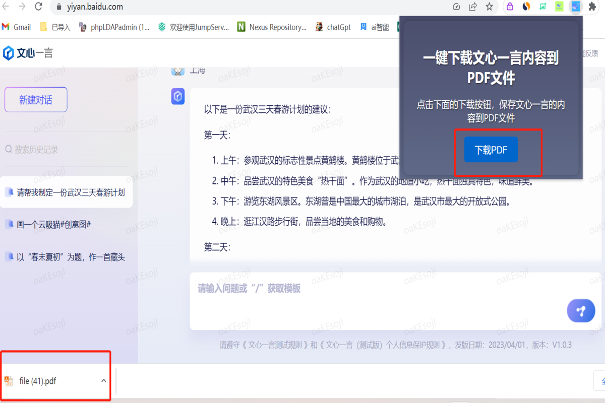
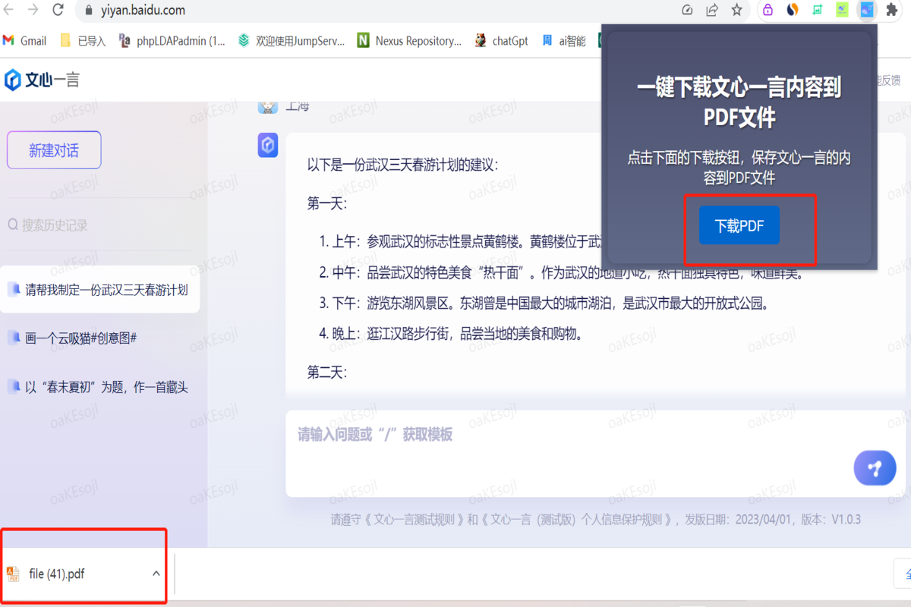

插件介绍
这个 Chrome 插件可以让你一键保存并下载文心一言的内容到 PDF 文件。它简单易用，功能强大，可以帮助你快速、方便地保存和共享文本。
下载地址
你可以在这里下载文心一言 PDF 下载地址如下：

使用说明
1、去上面的下载地址安装chrome插件
2、打开文心一言官方网址文心一言官网，正确使用文心一言
3、打开插件，点击插件上的下载PDF按钮即可下载文心一言的内容到本地PDF文件
4、如下图所示

这个 Chrome 插件可以让你一键保存并下载文心一言的内容到 PDF 文件。它简单易用，功能强大，可以帮助你快速、方便地保存和共享文本。
你可以在这里下载文心一言 PDF 下载地址如下：
1、去上面的下载地址安装chrome插件
2、打开文心一言官方网址文心一言官网，正确使用文心一言
3、打开插件，点击插件上的下载PDF按钮即可下载文心一言的内容到本地PDF文件
4、如下图所示
